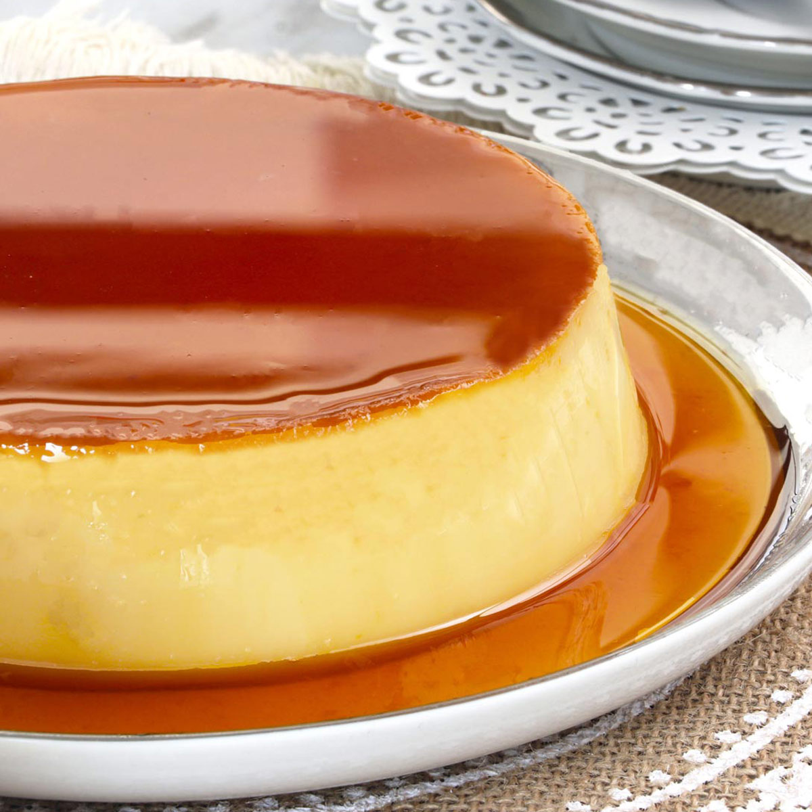

Banh Gan (Coconut Creme Caramel) is a smooth and soft custard covered in a dark amber caramel. The caramel is slightly bitter which helps cut through the sweetness of the custard to give you a rich but balanced dish.
Meal prep time : 1 hour 5 minutes
Servings : 8